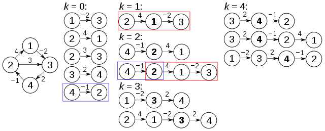

Floyd-Warshall Algorithm
Algorithm
The FloydWarshall algorithm compares all possible paths through the graph between each pair of vertices. It is able to do this with
Ɵ(|V|^{3}) comparisons in a graph, even though there may be up to Ω(|V|^{2}) edges in the graph,
and every combination of edges is tested. It does so by incrementally improving an estimate on the shortest path between two vertices,
until the estimate is optimal.
Consider a graph G with vertices V numbered 1 through N.
Further consider a function shortestPath (i,j,k) that returns the shortest possible path
from
i to j using vertices only from the set{1,2,..... ,k} as intermediate points along the way.
Now, given this function, our goal is to find the shortest pat
h from eachi to each j using only vertices in{1,2,...... ,N}.
For each of these pairs of vertices, the shortestPath (i,j,k) could be either:
(1) a path that does not go through k (only uses vertices in the set {1,.....,k-1\}.)
or
(2) a path that does go through k (from i to k and then from k to j, both only using intermediate vertices in {1, 2, ...., k}
We know that the best path from i to j that only uses vertices1 through k-1 is defined by shortestPath (i,j,k-1), and it is clear that if there were a better path from i to k to j, then the length of this path would be the concatenation of the shortest path from i to k (only using intermediate verti
ces in {1, 2, ...., k} and the shortest path from k to j (only using intermediate vertices in {1, 2, ...., k}.
If w(i,j) is the weight of the edge between vertices i and j, we can define shortestPath (i,j,k)
in terms of the following recursive formula: the base case is
shortestPath (i,j,0)=w(i,j) and the recursive case is
shortestPath(i,j,k) = min(shortestPath (i,j,k-1)), (shortestPath (i,k,k-1)+ shortestPath (k,j,k-1)).
This formula is the heart of the Floyd–Warshall algorithm. The algorithm works by first computingshortestPath (i,j,k) for all(i,j) pairs fork=1, then k=2, and so on. This process continues until k=N, and we have found the shortest path for all (i,j) pairs using any intermediate vertices. Pseudocode for this basic version follows:

Example
The algorithm above is executed on the graph on the left below:

Prior to the first recursion of the outer loop, labeled k = 0 above, the only known paths correspond to the single edges in the graph. At k = 1, paths that go through the vertex 1 are found: in particular, the path [2,1,3] is found, replacing the path [2,3] which has fewer edges but is longer (in terms of weight). At k = 2, paths going through the vertices {1,2} are found. The red and blue boxes show how the path [4,2,1,3] is assembled from the two known paths [4,2] and [2,1,3] encountered in previous iterations, with 2 in the intersection. The path [4,2,3] is not considered, because [2,1,3] is the shortest path encountered so far from 2 to 3. At k = 3, paths going through the vertices {1,2,3} are found. Finally, at k = 4, all shortest paths are found.
The distance matrix at each iteration of k, with the updated distances in bold, will be:

Path Reconstruction:
The Floyd–Warshall algorithm typically only provides the lengths of the paths between all pairs of vertices. With simple modifications, it is possible to create a method to reconstruct the actual path between any two endpoint vertices. While one may be inclined to store the actual path from each vertex to each other vertex, this is not necessary, and in fact, is very costly in terms of memory. Instead, the shortest-path tree can be calculated for each node in Theta (|E|) time using Theta (|V|) memory to store each tree which allows us to efficiently reconstruct a path from any two connected vertices.

Time Complexity
The Floyd-Warshall algorithm runs in O(|V|^3) time. This is because of the three nested for loops that are run after the initialization and population of the distance matrix.
Floyd-Warshall is completely dependent on the number of vertices in the graph. As you might guess, this makes it especially useful for a certain kind of graph, and not as useful for other kinds.
Applications and Generalizations
The Floyd–Warshall algorithm can be used to solve the following problems, among others:
- Shortest paths in directed graphs (Floyd's algorithm).
- Transitive closure of directed graphs (Warshall's algorithm).
- In Warshall's original formulation of the algorithm, the graph is unweighted and represented by a Boolean adjacency matrix.Then the addition operation is replaced by logical conjunction (AND) and the minimum operation by logical disjunction (OR).
Finding a regular expression denoting the regular language accepted by a finite automaton (Kleene's algorithm, a closely related generalization of the Floyd–Warshall algorithm)
- Inversion of real matrices (Gauss–Jordan algorithm)
- Optimal routing. In this application one is interested in finding the path with the maximum flow between two vertices. This means that, rather than taking minima as in the pseudocode above, one instead takes maxima. The edge weights represent fixed constraints on flow. Path weights represent bottlenecks; so the addition operation above is replaced by the minimum operation.
- Fast computation of Pathfinder networks.
- Widest paths/Maximum bandwidth paths
- Computing canonical form of difference bound matrices (DBMs)
- Computing the similarity between graphs
Try yourself